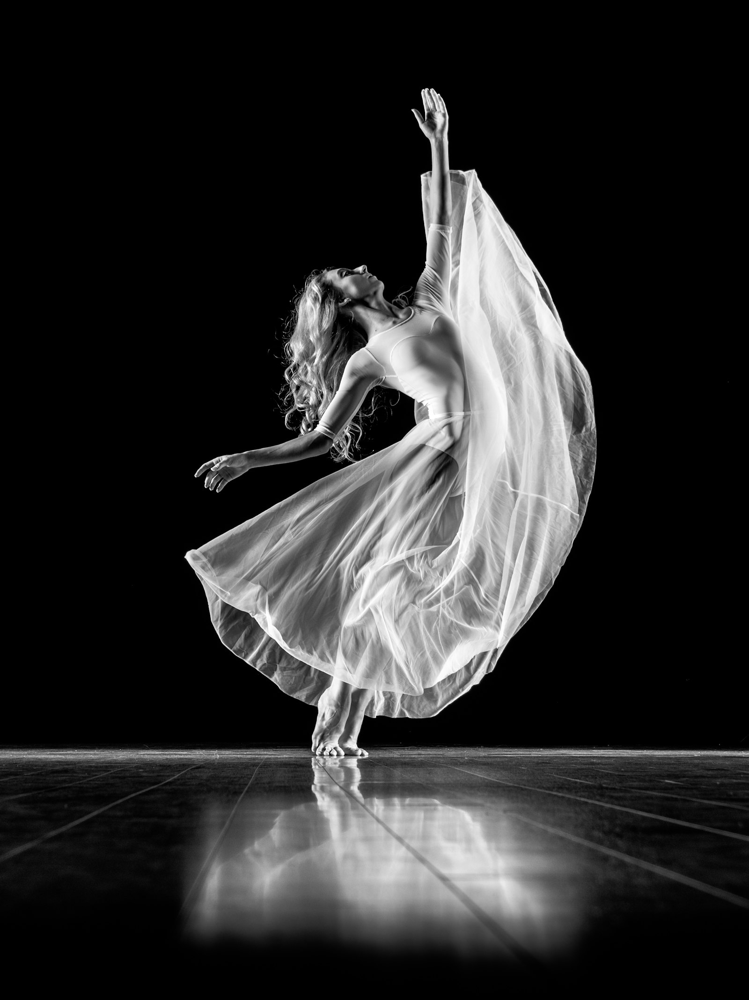
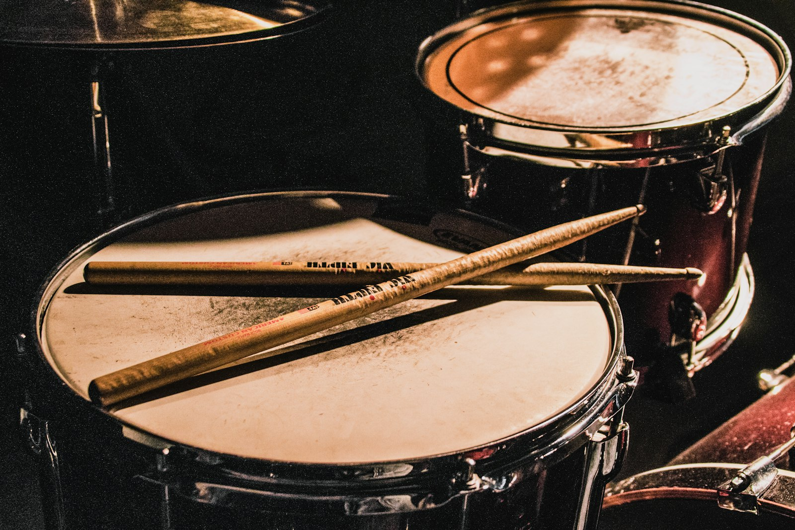

Workshops, Kurse & Seminare
Verschiedene Formate, ein Ziel: Musik und Rhythmus mit dem ganzen Körper erleben — offen für alle, unabhängig von Vorerfahrung.

TaKeTiNa®
Die TaKeTiNa-Methode (begründet von Reinhard Flatischler) verbindet Schritte, Klatschen und Stimme zu mehreren gleichzeitigen Rhythmusebenen. So entsteht ein Zustand zwischen Konzentration und Loslassen — tief entspannend und zugleich voller Energie.
- Rhythmusgefühl verbessern
- Entspannung und Stress abbauen
- Kreativität und Intuition stärken
- Verbesserte Wahrnehmung, Fokus und Präsenz
- Keinerlei Vorkenntnisse nötig
Du willst noch mehr erfahren? Hier geht's zur offiziellen TaKeTiNa-Website ↗
Bodypercussion
In der Bodypercussion wird der Körper zum Instrument. Klatschen, Stampfen, Schnipsen, Grooven: Spielerisch schulen wir Puls, Koordination und musikalisches Gefühl — und haben dabei jede Menge Spaß.
- Für Gruppen mit Kindern, Jugendlichen und/oder Erwachsenen
- Rhythmusspiele, Übungen und Improvisationen
- Ideal als Ergänzung zum Instrumental- & Musikunterricht

Rhythmik — Musik & Bewegung
Rhythmik verbindet Musik und Bewegung zu einem Erlebnis. Mit Stimme, Sprache, Material und dem eigenen Körper erkunden wir Musik durch direktes Erleben.
Bewegungsimprovisation, Rhythmusspiele und musikalische Interaktion laden dazu ein, Wahrnehmung zu schärfen, Ausdruck zu entwickeln und im Ich sowie im Miteinander zu wachsen.
- Für Gruppen mit Kindern, Jugendlichen und/oder Erwachsenen
- Musik, Bewegung, Stimme/Sprache und Material als Ausdrucksmittel
- Ideal für (Musik-)Schulen und sozialpädagogische Einrichtungen
Rhythmus ist Bewegung.
Gitarrenunterricht
Du willst Gitarre spielen — oder dein Spiel am Instrument weiterentwickeln? Im individuellen Unterricht orientieren wir uns an deiner Lieblingsmusik: von Songbegleitung über Fingerstyle bis zur Improvisation.
- Einzelunterricht
- Akustik- & E-Gitarre, alle Stilrichtungen
- Spielen nach Noten, Tabs oder Gehör
- Von Anfänger:in bis Fortgeschritten
Seminare & Teamevents
Rhythmus bringt Menschen in Einklang — im Klassenzimmer genauso wie im Unternehmen. Ich gestalte Fortbildungen für Pädagog:innen und Rhythmus-Events, die zusammenführen und gemeinsam schwingen lassen — für Teams, Feiern und Tagungen.
- Fortbildungen: Rhythmus, Musik & Bewegung im Unterricht
- Teambuilding mit Bodypercussion & Rhythmik
- Den gemeinsamen und eigenen Puls erleben mit TaKeTiNa
- Konzept individuell auf deine Gruppe zugeschnitten

Preise & Konditionen
Jedes Format ist anders — deshalb erstelle ich gerne ein persönliches Angebot. Aktuelle Kurspreise und Workshop-Beiträge erfährst du direkt bei der Buchung.